Im Menüpunkt
1 WinLine FIBU
1 Auswertungen
1 Steuermeldungen
1 Umsatzsteuer-Voranmeldung
kann die Umsatzsteuer-Voranmeldung ausgewertet werden.
Die Umsatzsteuervoranmeldung kann als Monatssummenblatt und - sofern die Checkbox Monate summieren aktiviert wurde - auch als Gesamtsteuerbeleg über mehrere Monate ausgegeben werden. Die Werte sind jederzeit aktuell, es ist keinerlei Summierungslauf notwendig. Es kann jede UVA-Periode beliebig oft ausgedruckt werden.
Hinweis
Die Darstellung des Fensters wird an die landesspezifischen Gegebenheiten angepasst und weicht somit in österreichischen und deutschen Mandanten vorneineinander ab. Informationen zur UStVA-Zuordnung finden Sie hier (für österreichische Mandanten) und hier (für deutsche Mandanten).
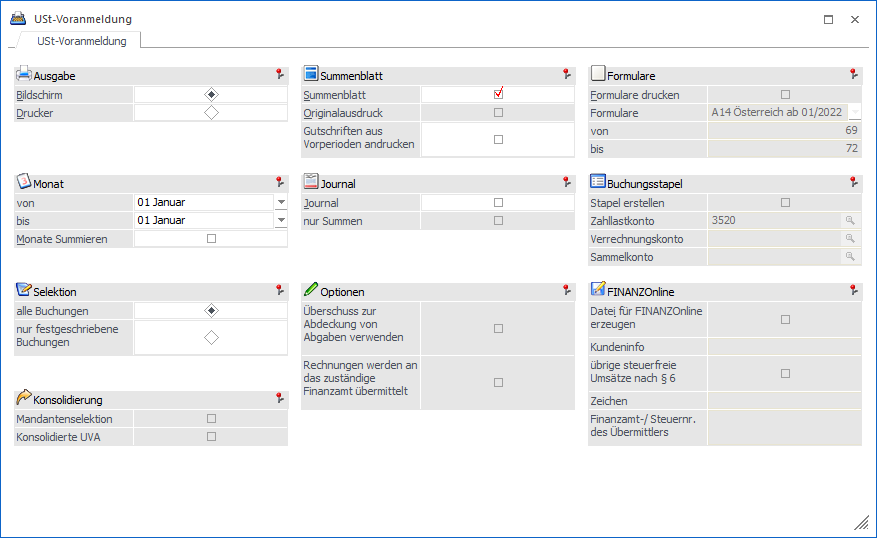
Folgende Eingabefelder und Einstellungen stehen zur Verfügung:
Ø Ausgabe
Drucker oder Bildschirm
Ø Monat Von/Bis
Geben Sie die Monatsgrenzen ein, die im UVA-Beleg berücksichtigt werden sollen.
Ø Monate summieren
Nach Aktivieren der Checkbox werden die zuvor selektierten UVA-Perioden nicht einzeln sondern als Gesamtbeleg ausgegeben.
Ø alle Buchungen
Alle Buchungen werden (gemäß den sonstigen getroffenen Eingrenzungen) ausgegeben, d.h. wenn in den FIBU-Parametern (WinLine START/Optionen) eingestellt wurde, dass Buchungen - bis zum Zeitpunkt, an dem sie festgeschrieben werden - noch als Stapel geladen und editiert werden können, dann stehen bei dieser Option ALLE Buchungen (die bereits festgeschriebenen UND die noch vorläufigen Buchungen) für die Ausgabe zur Verfügung.
Ø nur festgeschriebene Buchungen
Bei dieser Einstellung werden nur DIE Buchungen ausgegeben, die bereits im Menüpunkt
1 Buchen
1 Buchen
1 Buchungen festschreiben
als "definitiv" gekennzeichnet worden sind.
Hinweis
Wenn es Ihre firmenspezifische Organisation zulässt, dann empfehlen wir aufgrund der Klarstellung in den GoBD vom 14.11.2014 die Buchungen sofort festzuschreiben und die Funktion "Buchungen bearbeiten" nicht zu verwenden.
Ø Mandantenselektion
Die Checkbox steht nur bei Ausgabe auf den Drucker zur Verfügung und wenn sowohl ein Haupt- als auch ein Submandant definiert worden sind (WinLine Start / Optionen / Konsolidierung / Einstellungen). Wir diese Checkbox aktiviert, wird beim Betätigen des OK-Buttons das Mandanten-Selektions-Fenster geöffnet. Die UVAs für alle ausgewählten Mandanten werden dann einzeln ausgegeben. Dabei stehen folgende Optionen zur Verfügung:
ü Summenblatt
ü UVA-Journal
ü Originalausdruck
ü Formulardruck
ü FINANZOnline bzw. Elster
Ø Konsolidierte UVA
Wird diese Checkbox aktiviert, wird beim Klicken des OK-Buttons das Mandanten-Selektions-Fenster geöffnet. Hier wird der aktuelle Mandant immer als Hauptmandant der konsolidierten UVA verwendet. Aus den FIBU-Journalen der ausgewählten Mandanten werden nun die Steuersummen gerechnet und den Steuerzeilen im aktuellen Mandanten zugeordnet. Auf dem Steuerbeleg werden zu den Steuerzeilen des aktuellen Mandanten die summierten Werte aller Submandanten ausgegeben. Die summierten Werte können natürlich auch für die Ausgabe des Formulars bzw. der FINANZOnline- oder Elster-Datei verwendet werden.
Für eine konsolidierte UVA muss die Lizenz KKONS – Konzernkonsolidierung für mandantenübergreifende Stammdaten/Auswertungen vorhanden sein.
Achtung
Im Unterscheid zur Ausgabe für einen einzelnen Mandanten stehen bei der konsolidierten UVA nur die gerechneten Werte aus dem FIBU-Journal, nicht aber die FIBU-Salden zur Verfügung, d.h. diese Werte werden weder auf dem Steuerbeleg angedruckt, noch können sie für den Formulardruck verwendet werden. Auch der Druck "UVA-Journal steht für die konsolidierte UVA zur Verfügung.
Hinweis
Ausgabe einer konsolidierten UVA für den Hauptmandant 300M und den Submandanten 500M für den Monat Januar.
Bei der konsolidierten UVA wird der aktuelle Mandant in der Selektion nicht angezeigt, da er immer als Hauptmandant verwendet wird.
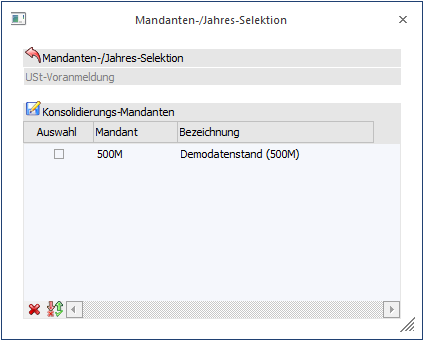
Wurde in einem der Submandanten eine Steuerzeile verwendet, die keine oder eine ungültige Konsolidierungs-Steuerzeile eingetragen hat, wird beim Summieren eine Warnung ausgegeben.
In diesem Fall kann die Ausgabe abgebrochen und eine Liste der betroffenen Steuerzeilen gedruckt werden.
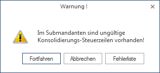
Bei der Option "Fehlerliste" wird die Liste ausgedruckt und es erscheint folgende Meldung.
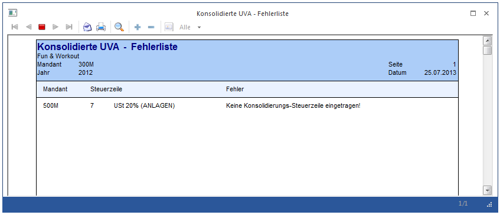
Ø Überschuss zur Abdeckung von Abgaben verwenden
Diese Checkbox kann nur angewählt werden, wenn auch die Option "Datei für FINANZOnline erzeugen" aktiviert wurde.
Dabei wird gesteuert, ob eine Verwendung des Überschusses zur Abdeckung von Abgaben, der unter Kennzahl 095 ausgewiesen wird, verwendet werden soll, oder nicht.
In der XML-Datei bedeutet dies, dass es einen Eintrag "<ARE> J" gibt (oder bei deaktivierter Checkbox eben nicht):
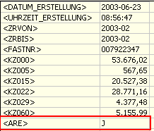
Diese Option wird auch am UVA-Formular (letzte Seite) angezeigt.
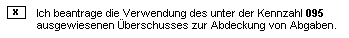
Ø Rechnungen werden an das zuständige Finanzamt übermittelt
Diese Checkbox kann nur angewählt werden, wenn auch die Option "Formulare" aktiviert wurde.
Die Option "Rechnungen werden an das zuständige Finanzamt übermittelt" muss aktiviert werden, wenn zu der entsprechenden UVA vorab am Postweg Rechnungen in Kopie an das zuständige Finanzamt übermittelt werden.
In der XML-Datei bedeutet dies, dass es einen Eintrag "<REPO> J" gibt (oder bei deaktivierter Checkbox eben nicht):
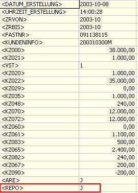
Diese Option wird auch am UVA-Formular (letzte Seite) angezeigt.
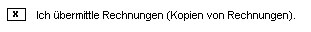
Ø Summenblatt
Das Summenblatt enthält die UVA-Verprobung lt. Bemessungsgrundlagen und Prozentsätzen, sowie die Kontrollsummen der in der jeweiligen Steuerzeile hinterlegten Automatikkonten und die daraus resultierende Forderung oder Verbindlichkeit gegenüber dem Finanzamt.
Nachdem in einigen Fällen für die Berechnung des Steuerbetrages die Bemessungsgrundlage herangezogen werden muss, und nicht die Gesamtsumme aus den gebuchten Steuerbeträge verwendet werden darf, ergibt sich zwangsweise eine Differenz der tatsächlich gebuchten Werte und der Werte am Formular.
Entspricht der aus der Bemessung errechnete Steuerbetrag nicht der Summe der einzelnen Steuerbeträge, so wird nach der Zwischensumme eine weitere Zeile mit dem Wert "Steuer (Formular)" angedruckt (dies betrifft natürlich nur Umsatzsteuerzeilen).
Österreich:
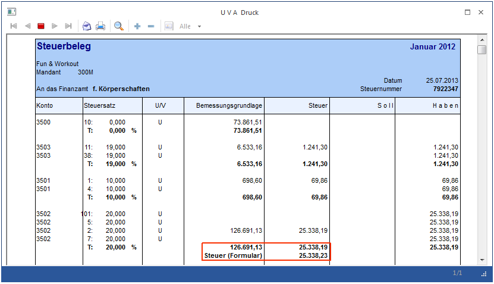
Deutschland:
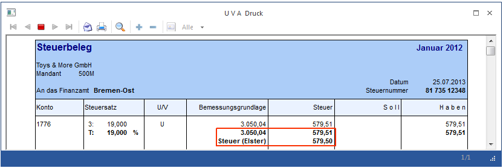
Ø Originalausdruck
Diese Option kann nur dann aktiviert werden, wenn der Ausdruck auf den Drucker erfolgt und auch das Summenblatt gedruckt wird.
Der Originalausdruck muss aktiviert sein, wenn die UVA an ELSTER oder FINANZOnline übermittelt werden soll.
Wird mit der Option "Originalausdruck" ein UVA-Beleg (egal ob mit oder ohne Formularen) für ein oder mehrere Monate ausgedruckt, wird die letzte Buchungsnummer im Fenster UVA-Sperre (im Mandantenstamm) in der Spalte "gedruckt bis" zurückgeschrieben. Gleichzeitig wird diese Periode im Mandantenstamm als gesperrt markiert und es wird z.B. folgende Meldung angezeigt:
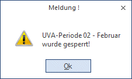
Wurde ein Originalausdruck für einen Monat durchgeführt, gibt es drei Möglichkeiten:
1. Der Monat (bzw. die Periode) kann weiterhin bebucht werden. Jede weitere Buchung in diese Periode wird im Fenster UVA-Sperre in der Spalte "nicht gedr. Zeilen" ausgewiesen. Daran ist auch ersichtlich, ob ein weiterer UVA-Beleg gedruckt werden soll oder nicht. Die Periode muss nach dem Originalausdruck im Mandantenstamm wieder freigegeben werden.
2. Der Monat soll nur von bestimmten Usern bebucht werden können. Diese Sperre wird aufgrund der Berechtigungsstufe (Priorität) des Users bestimmt.
Dazu wird in der Spalte "Berechtigung" im Fenster UVA-Sperre (im Mandantenstamm) die Priorität eingegeben, mit der man berechtigt ist, diese Periode zu bebuchen. Vorher muss die Checkbox Sperre deaktiviert werden.
Beispiel 1
Die Abschlussperiode darf nur vom Bilanzbuchhalter bebucht werden, der das Berechtigungsprofil 90 hat. Alle anderen Buchhalter haben das Berechtigungsprofil 50. Im Feld "Berechtigung" der Abschlussperiode wird daher das Berechtigungsprofil 90 eingetragen. Siehe dazu WinLine ADMIN, Kapitel "Berechtigungsprofile".
3. Die Periode darf überhaupt nicht mehr bebucht werden. Dazu bleibt die Checkbox "Sperre" aktiviert. Dadurch wird gesteuert, dass KEIN User, egal welche Berechtigungsstufe dieser hat, die gesperrte Periode bebuchen darf - es erfolgt die Meldung "Keine Berechtigung um den Monat X zu bearbeiten".
Durch Aktivieren der Checkbox "Sperre" wird auch ein neuerlicher UVA-Druck der entsprechenden Periode verhindert.
Hinweis:
Beim Aktivieren der Checkbox 'Originaldruck' wird der Radiobutton nun nicht mehr standardmäßig auf 'nur festgeschriebene Buchungen' gesetzt.
Ø Gutschriften aus Vorperioden andrucken
Wird diese Checkbox aktiviert, werden beim Ausgeben des Steuerbeleges die Zahllasten der Vorperioden neu gerechnet und daraus ein eventuelles Guthaben ermittelt. Im Fußteil des Steuerbeleges wird dieses Guthaben auch ausgewiesen.
Beispiel 2
Januar: Gutschrift 100,-
Februar: Zahllast 80,-
Im Februar wird ausgegeben:
Zahllast: 80,-
Gutschrift: 100,-
zu bezahlen: 0,-
März:
Zahllast 0,-
Gutschrift: 20,-
zu bezahlen: 0,-
April:
Zahllast 30,-
Gutschrift: 20,-
zu bezahlen: 10,-
Ø Journal
Im Umsatzsteuerjournal werden alle steuerrelevanten Buchungen aufgelistet und pro Prozentsatz und Steuerzeile summiert.
Ø nur Summen
Diese Checkbox kann nur dann aktiviert werden, wenn auch die Checkbox "Journal" aktiviert wurde. Dadurch werden im UVA-Journal nur die Summen pro Steuerzeile angedruckt.
Ø Formulare (nur wenn die Ausgabe auf den Drucker erfolgt)
Wenn die Checkbox "Formulare" angewählt wird, dann kann aus der nachfolgenden Auswahllistbox das Formular ausgewählt werden, das gedruckt werden soll. Derzeit stehen folgende Optionen zur Verfügung:
ü A1 Österreich ab 2003
österreichisches UVA-Formular, gültig bis September 2003 - besteht aus 4
Seiten
ü A2 Österreich bis
2002
österreichisches UVA-Formular - besteht aus 2 Seiten, gültig bis
2002
ü A3 Österreich
Kammerumlage
aktuelle Berechnung der österr. Kammerumlage
ü A4 Österreich ab
10/2003
österreichisches UVA-Formular - besteht aus 2 Seiten, gültig bis
2005
ü A5 Österreich ab
2006
österreichisches UVA-Formular - besteht aus 2 Seiten, gültig bis
06/2007
ü A6 Österreich ab
07/2007
österreichisches UVA-Formular - besteht aus 2 Seiten, gültig ab
07/2007
ü A7 Österreich ab
01/2008
österreichisches UVA-Formular - besteht aus 2 Seiten, gültig ab
01/2008
ü A8 Österreich ab
01/2009
österreichisches UVA-Formular - besteht aus 2 Seiten, gültig ab
01/2009
ü A9 Österreich ab
01/2012
österreichisches UVA-Formular - besteht aus 4 Seiten, gültig ab
01/2012
ü A10 Österreich ab
01/2013
österreichisches UVA-Formular - besteht aus 4 Seiten, gültig ab
01/2013
ü A11 Österreich ab
01/2013
österreichisches UVA-Formular - besteht aus 4 Seiten, gültig ab
01/2014
ü A12 Österreich ab
01/2016
österreichisches UVA-Formular - besteht aus 4 Seiten, gültig ab
01/2016
ü A13 Österreich ab
07/2020
österreichisches UVA-Formular - besteht aus 4 Seiten, gültig ab
07/2020
ü A14 Österreich ab
01/2022
österreichisches UVA-Formular - besteht aus 4 Seiten, gültig ab
01/2022
ü D1 Deutschland
2004
UVA-Formular Deutschland bis 2004
ü D2 Deutschland für
2005
UVA-Formular Deutschland für 2005
ü D3 Deutschland ab
2006
UVA-Formular Deutschland ab 2006
ü D4 Deutschland ab
2007
UVA-Formular Deutschland ab 2007
ü D5 Deutschland ab
2010
aktuelles UVA-Formular Deutschland ab 2010
ü D6 Deutschland ab
07/2011
aktuelles UVA-Formular Deutschland ab 07/2011
ü D7 Deutschland ab
2019
aktuelles UVA-Formular Deutschland ab 01/2019
ü D8 Deutschland ab
2021
aktuelles UVA-Formular Deutschland ab 01/2021
ü D9
Deutschland ab 2025
aktuelles UVA-Formular Deutschland ab 01/2023 mit
Erweiterungen ab 01/2025
ü U1
Formular Ungarn
ü H1
Formular Kroatien
ü C1
Formular Tschechien
ü ZZ Andere
Wenn diese Option
gewählt wird, dann können in den Feldern von - bis alternative Formularnummern
eingegeben werden, für die der Ausdruck erstellt werden soll.
Hinweis
Wenn der Mandant mit Länderkennzeichen Ungarn, Tschechien bzw. Zypern eingestellt ist, wird im Fenster "USt-Voranmeldung" in WinLine FIBU eine Tabelle für die Eingabe von zusätzlichen Informationen im UVA-Formular-Kopfbereich eingeblendet. Diese zusätzlichen Felder stehen auch im jeweiligen UVA-Formular zum Ausdruck bzw. für Berechnungen zur Verfügung.
Achtung
Die Formulare werden nur dann richtig bedruckt, wenn auch im Unternehmensstamm die Zuordnung der Steuerzeilen zu den Formularen richtig durchgeführt wurde.
Ø Buchungsstapel
Die Checkbox "Stapel erstellen" Checkbox steht nur bei Ausgabe auf den Drucker zur Verfügung. Wird diese Checkbox aktiviert und ein Zahllast-Konto eingegeben, wird bei der Ausgabe der UVA ein Stapel mit den Zahllast-Buchungen für die ausgewählte(n) Periode(n) erzeugt.
Wird die Checkbox für eine "konsolidierte UVA" verwendet, wird auch in den Submandanten "umgebucht. Dafür müssen zusätzlich zum Zahllastkonto im Hauptmandanten ein "Verrechnungskonto" und ein "Sammelkonto" eingetragen werden.
Hinweis 1
In jedem Submandanten muss das Verrechnungskonto eingetragen sein. Die Eingabe in diesen Feldern wird sofort nach der Eingabe gespeichert, ein Betätigen des OK-Buttons ist nicht nötig.
Hinweis 2
Beim Erzeugen der Buchungsstapel können nur die automatischen Steuerbuchungen berücksichtigt werden. Manuelle Steuerbuchungen (z.B. auf das Vorsteuerkonto) werden demnach nicht berücksichtigt.
Ø Meldung an Elster übermitteln (gilt nur für Deutschland)
Diese Option kann gesetzt werden, wenn in den FIBU-Parametern das Landeskennzeichen auf Deutschland steht, die Ausgabe auf Drucker und Originalausdruck gewählt wurde. Zur korrekten Übermittlung muss das Fenster Elster-Einstellungen gefüllt werden (siehe unten).
Dadurch wird eine Datei erzeugt, die elektronisch an das Finanzamt übermittelt wird.
Der Ablauf:
Beim Setzen der Option "Meldung an ELSTR übermitteln" wird geprüft, ob in den ELSTER-Einstellungen ein ELSTER-Zertifikat hinterlegt ist. Ist dies nicht der Fall, erfolgt eine Hinweis-Meldung.
Ist in den ELSTER-Einstellungen die Option "nach Vorschau des Protokollausdrucks senden" aktiviert, wird bei Start der Übertragung als erstes die Vorschau angezeigt und es erfolgt eine Abfrage, ob die Übertragung gestartet werden soll.
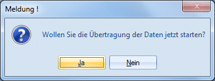
Die Erfolgreiche Übertragung wird bestätigt und das Übertragungsprotokoll am Bildschirm angezeigt.
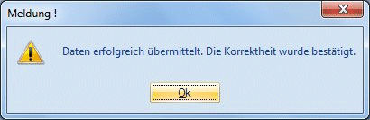
Das Vorschau-Protokoll und das Übertragungsprotokoll unterscheiden sich im Kopfbereich im Feld Sendedatum. Im Vorschau-Protokoll ist hier "Sendedatum: keine Datenübermittlung" vermerkt.
Im Übertragungsprotokoll wird hier Datum und Uhrzeit der Übertragung und auf der letzten Seite eine Transfernummer angedruckt.
Das Vorschau-Protokoll und das Übertragungsprotokoll werden im WinLine-Unterverzeichnis Elster gespeichert. Ist kein Programm zur Anzeige von PDFs installiert, so werden die Protokolle nicht am Bildschirm angezeigt.
Die Dateien, die bei der Ausgabe erzeugt werden, bekommen den Namen aus der Bezeichnung "STADUEV" (kommt von Elster), einer hochzählenden Nummer, dem Mandantenkürzel, dem Jahr und von- bis- Monat.
Beispiel aus dem Demomandanten 500M, Jahr 2009, Periode 1: STADUEV_0001_500M_2009-1-1.XML.
Die Datei kann nur bei Erstellung der UVA in der WinLine übermittelt werden. Ein nachträgliches übermitteln ist nicht möglich.
Achtung
Die Datei kann nur dann richtig ausgegeben werden, wenn auch im Unternehmensstamm die Zuordnung der Steuerzeilen zu den Formularpositionen richtig durchgeführt wurde (siehe Kapitel Unternehmensstamm - Steuerzeilen).
ü Berichtigte Anmeldung
Es
erfolgt ein entsprechender Vermerk in der Datei, dass es sich um eine
berichtigte Anmeldung handelt.
ü Verrechnung des
Erstattungsbetrages erwünscht
Soll der Erstattungsbetrag verrechnet werden,
so ist das Feld anzuhaken.
ü Einzugsermächtigung ausnahmsweise
widerrufen
Ein entsprechender Vermerk für den Widerruf der
Einzugsermächtigung wird in der Datei gesetzt.
ü Belege werden gesondert
eingereicht
Ein entsprechender Vermerk wird in der Datei gesetzt.
ü
Dauerfristverlängerung/Sondervorauszahlung
Wird diese Checkbox
gesetzt, so wird zusätzlich zur UVA der Antrag auf Dauerfristverlängerung bzw.
die Anmeldung der Sondervorauszahlung übermittelt. Dazu wird im nächsten Feld
das Jahr angegeben, für das der Antrag erstellt werden soll. Darunter erfolgt
die Eingabe des Betrages der Sondervorauszahlung.
ü Anrechnung der
Sondervorauszahlung
Mit Setzen dieses Flags und Eingabe eines Betrages
erfolgen automatisch die Übergabe des Betrages im Kennzeichen 39 (Anrechnung der
festgesetzten Sondervorauszahlung für Dauerfristverlängerung) sowie der Abzug in
der Summe (Kennzeichen 83).
Der hier erfasste Betrag wird via Elster
übermittelt, jedoch nicht auf dem UVA-Formular, welches zusätzlich ausgegeben
werden kann, ausgewiesen.
ü Wechsel von KU-Regelung (§19 UstG) zur Regelbesteuerung
Für im Inland ansässige Unternehmer gilt die Eintragung des Datums "Beginn des Wechsels von der Kleinunternehmer-Regelung zur Regelbesteuerung" in diesem Feld zu hinterlegen. Haben die Umsätze (§ 19 Absatz 2 UStG) den Betrag (in 2024 = 25.000 €) überschritten, unterliegen die Umsätze (ab 01.01.2025) der Regelbesteuerung. In einem solchem Fall wird in diesem Feld KEIN Datum eingetragen.
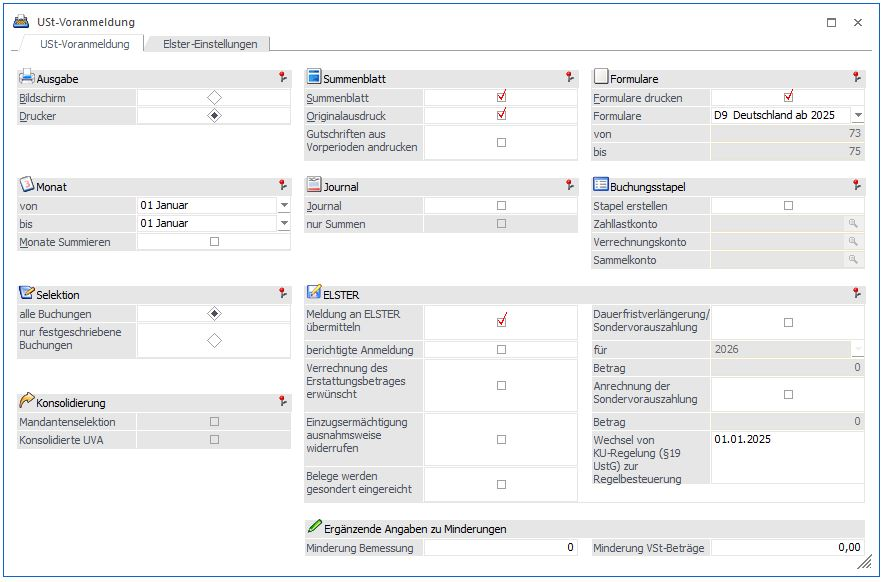
Ø Info
Durch Anklicken des INFO-Buttons wird eine Übersicht über die UVA-Perioden angezeigt. Dabei ist ersichtlich, welche Perioden bereits gesperrt wurden, für welche Perioden Berechtigungen vergeben wurden und in welchen Perioden wie viele Zeilen ohne Originalausdruck gebucht wurden.
Ø OK
Durch Anklicken des OK-Buttons wird die UVA gemäß den Einstellungen ausgegeben.
Wurde die Option Originalausdruck aktiviert (Voraussetzung für die Übermittlung an ELSTER), kommt ein Hinweis, wenn in dem ausgewählten Zeitraum nicht festgeschriebene Buchungen existieren. Wird die Ausgabe fortgesetzt, wird eine Meldung ins Auditprotokoll geschrieben.
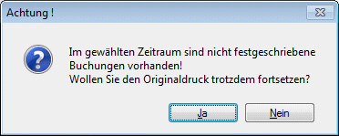
Wurde die Option "Meldung an Elster übermitteln" aktiviert (nur in deutschen Mandanten möglich), wird - nachdem die Meldungen für die Sperren der UVA-Perioden ausgegeben und bestätigt wurden - die Datei direkt übermittelt oder nach Einsicht des Protokolls übermittelt.
Hinweis
Wird mit der Funktion "Buchungen bearbeiten" gearbeitet, sollten die Buchungen des gewählten Zeitraums spätestens nach der Ausgabe der Umsatzsteuer-Voranmeldung festgeschrieben werden.
Register Elster-Einstellungen
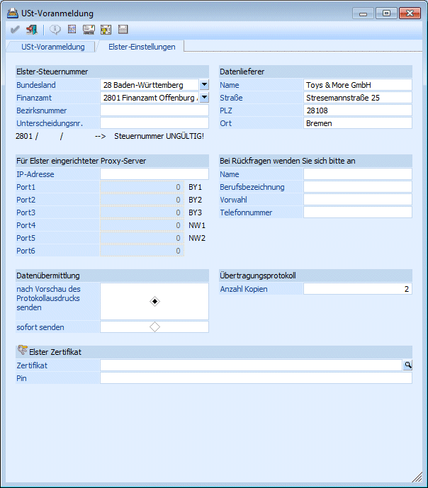
Ø Elster-Steuernummer
Das Bundesland und das Finanzamt können mittels Auswahllistbox ausgewählt werden. Die Bezirksnummer und die Unterscheidungsnummer werden manuell hinterlegt.
Wurde die Steuernummer eingegeben, wird sie direkt auf Gültigkeit geprüft. Ein entsprechender Hinweis wird angezeigt. Ist die Steuernummer ungültig, kann KEINE Datei an Elster übermittelt werden.
Ø Für Elster eingerichteter Proxy-Server
Hier können Sie die IP-Adresse Ihres eingerichteten Proxy-Servers hinterlegen. Zusätzlich werden dann die Felder für die Ports freigeschaltet. Die Ports BY1 - BY3 stehen für die Sammelstelle in München, Bayern. Wird Port2 (BY2) gefüllt, so wird der Port6 automatisch gefüllt. Port6 ist nicht editierbar. NW1 + NW2 stehen für die Sammelstelle in Düsseldorf, Nordrheinwestfalen. Von diesen Sammelstellen werden die Daten online an die Rechenzentren der zuständigen FA weitergeleitet. Nähere Angaben hierzu und der Einrichtung des Proxy-Servers mit Firewall finden Sie auf www.elster.de.
Ø Datenübermittlung
Es kann eingestellt werden, ob die Datenübermittlung nach Vorschau des Protokolldruckes oder sofort stattfindet. (Das Übertragungsprotokoll ist keine Auswertung der WinLine und kann somit nicht über den Formulareditor angepasst werden). Je nach Steuerart werden nur Umsätze und nicht die Steuerbeträge ausgewiesen.
Die Vorschau vor dem Versenden der Daten bzw. das Übertragungsprotokoll werden nicht am Bildschirm angezeigt. Es wird eine PDF-Datei im WinLine-Verzeichnis angelegt.
Beispiel-Datei aus dem Demomandanten 500M:
Vorschau: STADUEV_0001_500M_2009-1-1_Preview_1.pdf
Sendeprotokoll: STADUEV_0001_500M_2009-1-1_1.pdf
Ø Datenlieferer
Vorbelegt werden die Daten aus dem Mandantenstamm. Werden im Mandantenstamm Änderungen vorgenommen, so müssen die Änderungen ggf. auch im Datenlieferer durchgeführt werden. Bei der Übermittlung der Meldung werden die Daten des Datenlieferers übermittelt, nicht die Daten aus dem Mandantenstamm.
Ø Bei Rückfragen wenden Sie sich bitte an
Zusätzlich kann der Name, Beruf und die Telefonnummer für Rückfragen hinterlegt werden.
Das Feld "Berufsbezeichnung" ist max. 10 Zeichen begrenzt, da nicht mehr Zeichen an Elster übermittelt werden dürfen.
Ø Übertragungsprotokoll
Es kann die Anzahl der Protokolldrucke festgelegt werden.
Ø Elster-Zertifikat
Hinterlegen Sie hier das Zertifikat für eine sicherere verschlüsselte Übermittlung. Mit der Lupe erscheint ein Browser, über den Sie das bei Ihnen gespeicherte Zertifikat auswählen können. Dieses kann hier vor der Übermittlung an Elster geschlüsselt werden. Für den Einsatz in WinLine verwenden Sie das Software-Zertifikat ELSTERBasis.
Wird ein falscher Pfad hinterlegt und das Elster-Zertifikat somit bei der Versendung nicht gefunden, wird eine Hinweis-Meldung angezeigt und die Übermittlung erfolgt nicht.
Ø Elster-Pin
Eingabe der max. 20-stelligen, alphanumerischen PIN-Nummer
Ist ein Elster-Zertifikat hinterlegt, so muss die zugehörige PIN-Nummer eingegeben werden. Ansonsten kann das Zertifikat nicht verwendet werden.
Bei Eingabe einer falschen PIN-Nummer wird vor der Versendung eine Meldung angezeigt und die Übertragung erfolgt nicht.
Ø Button Teilnahmeerklärung drucken
Wenn die UVA elektronisch übermittelt werden soll, muss die Teilnahmeerklärung gedruckt, ausgefüllt und an das zuständige Finanzamt verschickt werden. Ist die Steuernummer korrekt eingetragen, so werden die Daten des Finanzamtes in die Teilnahmeerklärung übernommen.
Ø Button Adresse des Finanzamtes anzeigen
Aufgrund des hinterlegten Finanzamtes werden hier nützliche Informationen wie z.B. Adresse, Bankverbindung und Öffnungszeiten angezeigt.
Ø Button Elster-Version
Es wird eine Übersicht über Produkt- und Fileversion angezeigt.
Ø Button Elster-Journal
Neben dem Elster-Protokoll besteht die Möglichkeit, ein Elster-Journal in der WinLine auszudrucken. Hier werden die Daten der Übermittlung zusätzlich gespeichert. Das Journal enthält für übermittelte Datensätze die Überschrift "erzeugt und gesendet".
Die Elsterprotokolle sollten in jedem Fall aufbewahrt werden, da sie vom ElsterTelemodul gedruckt werden und den Versand belegen.
Ø Datei für FINANZOnline erzeugen ( gilt nur für Österreich)
Diese Option kann nur dann gesetzt werden, wenn in den FIBU-Parametern das Landeskennzeichen auf Österreich gestellt ist. Die Option "Originaldruck" muss aktiviert sein, um die Datei erzeugen zu können. Dadurch wird eine Datei erzeugt, die dann elektronisch an die FINANZOnline übermittelt werden kann. Die Datei, die bei der Ausgabe erzeugt wird, bekommt den Namen U30_Mandantennummer_Wirtschaftsjahr_vonMonat-bisMonat.XML (z.B. U30_300M_2003_4-4.XML steht für die UVA des Mandanten 300M im Monat April 2003). Diese Datei wird automatisch in das Verzeichnis "FINANZOnline" gespeichert, das - sofern noch nicht vorhanden - als Unterverzeichnis vom aktuellen Programmverzeichnis angelegt wird.
Achtung
Die Datei kann nur dann richtig ausgegeben werden, wenn auch im Unternehmensstamm die Zuordnung der Steuerzeilen zu den Formularpositionen richtig durchgeführt wurde (siehe Kapitel Unternehmensstamm - Steuerzeilen).
Weiters wird eine Fehlermeldung angezeigt, wenn im Mandantenstamm keine Finanzamtsnummer oder keine Steuernummer eingetragen ist (dabei wird keine Datei erzeugt!).
Nachdem die Struktur der XML-Datei ab 10/2003 erweitert wurde, wird automatisch anhand der Periode erkannt, dass bis 09/2003 die "alte" Struktur gewählt wird, und ab 10/2003 automatisch die neue.
Ø Kundeninfo
Diese Checkbox kann nur angewählt werden, wenn auch die Option "Datei für FINANZOnline erzeugen" aktiviert wurde.
In diesem Feld kann eine 20-stellige Eingabe (z.B. Kundeninfo) erfolgen, die auch in die XML-Datei übernommen wird und auf dem Übertragungsbericht von FINANZOnline angezeigt wird.
Ø Übrige steuerfreie Umsätze nach § 6 Z __
Diese Checkbox kann nur angewählt werden, wenn auch die Option "Datei für FINANZOnline erzeugen" aktiviert wurde.
Wird diese Option aktiviert, so kann im nachfolgenden Eingabefeld die Ziffer eingegeben werden, unter die jene Umsätze fallen, die unter Kennzahl 020 eingetragen werden (derzeit können dies 1, 3a, 3aa, 3b oder 3bb sein, daher muss das erste Zeichen numerisch sein!).
Ø Finanzamt-/Steuernummer des Übermittlers
In diesem Feld kann die Steuernummer (inkl. Finanzamtsnummer) des Übermittlers eingegeben werden. Dieses Feld wird nur dann verwendet, wenn die Daten nicht selbst übermittelt werden (z.B. vom Steuerberater). Die Steuernummer kann nur in der Form XXYYYYYYY eingegeben werden (XX steht für die Finanzamtsnummer, YYYYYYY steht für die Steuernummer). Diese Eingabe wird pro Benutzer und pro Mandant gespeichert.
Ø INFO-Button
Durch Anklicken des INFO-Buttons wird eine Übersicht über die UVA-Perioden angezeigt. Dabei ist ersichtlich, welche Perioden bereits gesperrt wurden, für welche Perioden Berechtigungen vergeben wurden und in welchen Perioden wie viele Zeilen ohne Originalausdruck gebucht wurden.
Ø OK-Button
Durch Anklicken des OK-Buttons wird die UVA gemäß den Einstellungen ausgegeben.
Wurde die Option Originalausdruck aktiviert (Voraussetzung für die Übermittlung an FINANZOnline), kommt ein Hinweis, wenn in dem ausgewählten Zeitraum nicht festgeschriebene Buchungen existieren. Wird die Ausgabe fortgesetzt, wird eine Meldung ins Auditprotokoll geschrieben.
Wurde die Option "Datei für FINANZOnline erzeugen" aktiviert (nur in österreichischen Mandanten möglich), wird - nachdem die Meldungen für die Sperren der UVA-Perioden ausgegeben und bestätigt wurden - das Fenster "USt-Voranmeldung - FINANZ Online" (Details entnehmen Sie den Kapitel FINANZ Online) geöffnet, das die elektronische Übermittlung der UVA erleichtern soll.
Hinweis
Wird mit der Funktion "Buchungen bearbeiten" gearbeitet, sollten die Buchungen des gewählten Zeitraums spätestens nach der Ausgabe der Umsatzsteuer-Voranmeldung festgeschrieben werden.